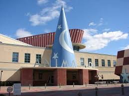

reflect the world outside the window
미국, 뉴욕주, 뉴욕 시, 5번가, 417번지
마블 코믹스(Marvel Comics)는 미국 만화책 출판사이다. 월트 디즈니 컴퍼니의 자회사인 마블 엔터테인먼트의 출판 부문이다. 마블 코믹스는 1939년 타임리 코믹스로 설립되어, 1950년대에는 아틀라스 코믹스를 거쳐, 1960년대 초에 들어 스탠 리, 잭 커비, 스티브 딧코가 제작한 판타스틱 포에서 현재 상호를 사용하였다. 이 시기부터 마블의 시대가 시작되었다. 마블 코믹스는 DC 코믹스와 함께 북미에서 가장 큰 만화책 출판사로 성장하였다. 2009년 9월 1일 월트 디즈니 컴퍼니에 의해 40억 달러에 인수되었다. 마블은 자회사의 유명한 캐릭터인 캡틴 아메리카, 토르, 스파이더맨, 엑스맨, 판타스틱 포, 헐크, 아이언 맨, 닉 퓨리, 닥터 스트레인지, 호크아이, 블레이드, 퍼니셔, 데어데블, 타노스, 블랙 팬서, 고스트 라이더, 앤트맨, 가디언즈 오브 갤럭시 등 으로 잘 알려져있다. 대부분의 마블 코믹스의 캐릭터들은 마블 유니버스라는 하나의 세계관 속의 거주자로서 이야기가 진행되고 있다.